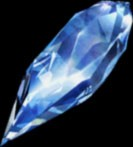
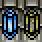
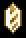
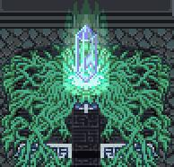
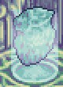
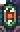
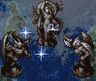
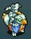
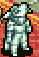

Characters
Characters Places
Places Stories
Stories Species
Species Organizations
Organizations Glossary
Glossary Transportation
Transportation Monsters
Monsters Jobs
Jobs Summons
Summons Items
Items Magic/Skills
Magic/Skills Weapon Types
Weapon Types In-Crossovers
In-Crossovers Ex-Crossovers
Ex-Crossovers Release Dates
Release Dates Name Origins
Name Origins Famous Moments
Famous Moments Music Database
Music Database Features
Features Game Help
Game Help Game Evolution
Game Evolution Square Art
Square Art Fan Flash
Fan Flash Final Fantasy Forums
Final Fantasy Forums Updates
Updates Site Info
Site Info Feedback
Feedback Full Index
Full Index Links
Links Staff
Staffglos·sa·ry / n. List defining technical or special words. [L, rel. to GLOSS]
Many terms and plot elements are used throughout the games which some people just can't get straight. Here's an attempt at cataloguing them. Note that until FF5, most plots are so simple they don't need to be expanded on here.
General Terms
- Adamant (1, 4, 5)
- A very tough metal which is usually utilized in the making of the sword Excalibur. In 5, the Adamantium metal is the material which powers the meteors (the ones that travel between the First and Second Worlds).
- Clan (12, 12RW, TA, TA2)
- In TA and TA2, a multipurpose organization more like a clique, which has to keep up its clan rank and fight with other clans for supremacy and control of turf. In 12RW, basically just a name for Vaan's group of sky pirates. Slightly different in 12:
CP: A group formed for the main purpose of driving beasts and fiends from civilized areas, called to action in particularly bad cases, when individuals and town watches are not deemed equal to the task. Able to react more swiftly than equivalent military units, the clans are used by many smaller municipalities as rapid-response peacekeepers. As a result, few clans' activities need heed the boundaries between territories, and they move freely across wastes and sacred lands alike.
Clans exist throughout Ivalice, the majority of them being quite small. Still, of those clans operating in the largest cities, many have earned a name for themselves through their accomplishments.
Clan Diatroma of Bhujerba and Clan Buckaboo of Balfonheim Port are some of the more famous regional clans. Of late, a young clan in Dalmasca by the name of Clan Centurio has become a household name.
Along the Phon Coast, bands of hunters fulfil the role of clans, hunting local monsters and keeping the peace. - Crystals (1, 3, 4, 5, 9, 12, MQ, TA, Anime), Orbs (1n)
- Quintessential plot element. There are four basic Crystals, derived from the four Elements (fire, water, wind, earth). Each one usually has some power over its particular element; if the Crystal is destroyed or captured, its power suffers (e.g., if the Water Crystal is destroyed, the rivers might dry up). In FF3 and FF5, the Crystals gave more available Jobs to the Heroes when they rescued them. In FFMQ, there's a fifth Crystal, that of Light, which takes the form of an enigmatic old man. In FF4, they go a bit overboard with a total of 16 Crystals: 8 Light Crystals of the Earth (four of the overworld, four of the underworld), and 8 Dark Crystals of the Moon. The Anime also mentions the Crystals (the same ones used in FF5) but the only one we ever see is the Wind Crystal. In FF9, the Crystal is revealed to be the origin of all life; it also has some sort of connection with eidolons. Mirroring the four-elemental Crystals, we have four Mirrors and four pieces of the crystal that summons Alexander: The Falcon Claw (Wind?), Desert Star (Earth?), Silver Pendant (Water?), and Memory Earring (Fire?). FF12 has save crystals which look quite similar to the familiar crystal shape. In FFTA there were five Crystals, one per Totema, and they anchored the fictional Ivalice to reality.
    
Orbs from 1, art of Orb from 1, Crystal from 3, 4, MQ, 5, and TA. - Emperor (4), Fiend (1), Chaos (9)
- Basically a super-bad guy who is assosciated with one of the four Elementals (fire, earth, water, wind). In 1 the Fiends (Lich, Kary, Kraken, and Tiamat) were holding the Orbs hostage; in 4, the Emperors (Milon, Cagnazzo, Valvalis, and Rubicant) were Golbez's stooges. The Fiends return as Chaoses in 9 to guard the land of Memoria. The four Emperors from 4 are named after characters in the ancient work "Dante's Inferno". Note that "fiend" in FF10 is generically used to refer to monsters.
- Gil, GP (all)
- Gil is the unit of currency in all FF games. The translated versions of FF1, 4, and 6 all changed this into GP for unknown reasons (probably because "gold pieces" were more in vogue at the time). However, in 7 this became impossible because the Gold Saucer used its own currency, which it called GP. So from then on, Gil was reinstated on the western shores. The exception to all this is MQ, which originally had GP as its currency. Gil is apparently a very tough coin; it's used in several attacks called Coin Toss, Gil Toss, or Zeninage.
- Jagd (TA, 12)
- In TA, Jagd is an area where the Judges and laws do not rule. In 12, this is expanded upon:
CP: Regions of Mist-laden winds and magicite-rich soil, precluding the proper operation of skystone. Shifts in weather have been known to make jagd where once there was none, though the reverse has never been recorded by the chroniclers of such things. As airships cannot operate in jagd, no such region is under the control of a major country, making the jagds lawless, perilous places. - Magic/Magick (all)
- In games set in a more fantastic setting, magic didn't have to be explained; it was just there, as befits a fantasy game. However, as the ideas in the game matured, magic had to be explained away. In 6, magic ability came about from power drained from Espers. True magic ability could only be taken from Magicite, though. In 7 magic power was given by materia. In 8, magic was actually called para-magic and could only be used via Junctioned Guardian Forces. (The process of drawing out para-magic was invented by Dr. Odine.) In the Ivalice games, it was given the more fanciful name "magick".
- Mist (FF12, FF12RW, FFTA2)
- Similar to FF9's Mist, but also different.
CP: Naturally occurring energy, found in almost all regions of the world, affecting all living things, the climate, and even the land itself. Magick is but one of the diverse methods of harnessing the power of Mist, the most common being via its controlled release from magicite, an ore known to hold high concentrations of condensed Mist within its crystalline structure. For larger effects, a greater amount of Mist is required, making particularly rich magicite a valuable commodity.
There are marked regional differences in the amount of Mist contained in the atmosphere and soil. While typically invisible to the naked eye, high densities of Mist will occasionally manifest in very visible phenomena. The highest concentrations of Mist can even do damage, leading to over-rapid changes in the environment, and violent behavior among animals and those more sensitive to the Mist's effects. - Mithril/Mythril (2, 7)
- An extremely strong yet light material, very useful for making weapons and armor. Mithril equipment exists in every FF (besides MQ).
- Mognet (3, 9)
- In FF9, it's a huge world-wide system wherein Moogles everywhere can talk to each other via mail. Humans sometimes piggyback on the system as well, but not often. Also exists in the DS remake of FF3, where it's used to send letters to characters in the game as well as to external gamers via wireless connection.
Final Fantasy V
- Void (5)
- The ultimate power of nothingness. Exdeath's main mission is to take control of this power, which can only be done in the crux of the place-between-places, the Cleft Of Dimension. Basically, Void just makes things... disappear.
- Esper
- A magical creature. Espers used to be human, but they got caught in the cross-fire during the War Of The Magi and were turned into strange creatures. Eventually, they created their own world and lived there, shut off from the real world. They set up a barrier separating the worlds. See also Esper (FFXII).
- Magicite
- When Espers die, their bodies turn into stone shards called Magicite. If carried by a human, it grants him special magic spells. See also Magicite (FF12).
 - Magitek
- Short for "magical technology", the remains of Espers are drained of their magical power and machines are infused with it. This gives the machines great destructive power. As well, special soldiers called Magitek Knights are also infused with the power, giving them the ability to use magic.
- Statues/Goddesses/Magi
- The three goddesses who created magic and Espers also were the cause of the War of the Magi - in fact, they were the War of the Magi. However, they eventually came to realize what kind of damage they were doing, and, in a rare moment of clarity, turned themselves into stone and sealed their power with them. They adjured the Espers (who were humans caught in the crossfire of their battle) to take the statues to a sealed-off place created by them, and to live there. The Statues set up a barrier between the real world and the Esper World, and linked it to their bodies. However, Kefka somehow found a way to control the Statues himself, leading him to limitless power.
 - DMW
- Short for Digital Mind Wave, this is the slot-like reel that constantly rolls during battle in Crisis Core. It features characters important to Zack, and represents his memories of them which inspire him. Often scenes or memories will play as the slot rolls.
- Geostigma
- A disease ravaging the world after Meteorfall; it's apparently caused by leftover Jenova cells in the Lifestream. Aeris's soul helps heal most of the disease, at least in Edge, by the end of 7AC. In DoC, Deepground soldiers are trying to harvest people who are clean of Geostigma to sacrifice to Omega.
- Holy
- A spell which comes from the deepest core of the Planet. It's designed to destroy invading attackers (kind of like white blood cells) but is very volatile and unpredictable. It can also be blocked by a powerful evil force like Jenova.
- Jenova Cells
- Jenova, a great spacefaring terror, was found in the Northern Crater. She was discovered to have great magical powers, and Shinra Corp. began using cells from her body to augment the natural powers of their SOLDIER elite force. However, Hojo of Shinra went even further with his experiments and injected the cells into a fetus. The result of that was Jenova's proper son, Sephiroth.
- Lifestream
- Basically, a theory that there's only a certain amount of total life force on the planet. Whenever any living thing dies, its life force goes back into the Lifestream, whereas when something is born, it takes its life from the Lifestream. The Lifestream runs underneath the Planet's surface. Another word for it is Mako. In 9 the same idea is reiterated, but is now called the "cycle of souls". FF: TSW has a similar idea as well, calling it "Gaea".
- Mako
- There is some discussiono about whether Mako is simply another word for Lifestream, or if it is a "condensed" version of Lifestream. The verdict is still out, but Mako is the term generally used when referring to the energy extracted from it.
- Mako Reactor
- A device used by Shinra Corp. to drain Mako energy from the Planet and use it as electrical power. There are many parallels drawn between Mako reactors and nuclear reactors (Mako poisoning?) They're also the targets of the terrorist bombs planted by AVALANCHE.
- Materia
- Materia is basically solidified Mako. It has the ability to give its user extra abilities or magic powers. There are five types of "normal" materia and two "special" materia: Green (magic spell), yellow (special battle command), purple (special effect), red (summon spell), and blue (enhancement) are the "normal" materia. The Black Materia has the ability to summon the ultimate destructive spell, Meteor; while the White Materia ca Summon the ultimate Light Magic spell, Holy.
- Meteor
- The ultimate Black Magic spell calls a giant meteor from outer space. If it hits, the Planet will summon all its energy to heal the wound caused by it. Sephiroth plans to gather that energy for himself.
- Meteorfall
- A reference to the events at the very end of FF7. AC takes place two years after Meteorfall, and DoC three years after it.
- Project G
- Short for Project Gillian, named after Gillian Hewley. Gillian was implanted with Jenova cells, and later her own cells were injected into an infant, Genesis Rhapsodus. Gillian also gave birth to a baby boy, Angeal. Genesis is the least "perfect" subject, since his cells were obtained through two indirections (Jenova -> Gillian -> Genesis). He has the power to make copies of himself. Angeal's powers are purer than Genesis's; he can't make copies of himself, but can create monsters with his genes. Both Angeal and Genesis begin to mutate and deteriorate due to their imperfections. The conclusion of this project ended with the creation of Sephiroth, who was directly injected with Jenova cells; while eventually he also mutated, the deterioration never affected him.
- Protomateria
- A special materia discovered by Lucrecia and Grimoire, and implanted into Vincent to allow him to control Chaos. Deepground (in particular, Rosso the Crimson) stole the Protomateria from Vincent to use it to control Omega.
- Reunion
- The Jenova Reunion should be more aptly named the Sephiroth Reunion. When Sephiroth calls all his clones to the Northern Crater, the Jenova cells inside them would then technically be together, hence the name Reunion. However, all it means is that Sephiroth is calling his clones to him.
- S Cells
- Short for Sephiroth cells. Zack and Cloud were both infused with these during Hojo's experiments on them; however, Zack's previous SOLDIER treatment (with Mako energy) ended up mostly rejecting the cells. Cloud's system accepted them, but in combination with the Mako poisoning remaining after the experiment, left him a wreck. Genesis desires the S cells to stop the deterioration. Zack's impure S cells have a marked effect on the Genesis copies, turning them into mutated monsters.
- Sephiroth Clone
- The real Sephiroth was created by Hojo of Shinra. However, Hojo continued his experiments in an attempt to make another Sephiroth. All he got were brain-dead vegetables who dressed in black cloaks (he gave each of them a numbered tattoo). The clones can be controlled by the real Sephiroth's mind (the true Sephiroth is encased in Mako in the Northern Crater). He can also change their appearances to look like him. Therefore, any "Sephiroth" met by Cloud up until the very end of the game is only a clone.
- Sister Ray
- The name of the giant Mako Cannon attached to Junon, which was then transferred to Midgar. It has the ability to wipe out one of the Planet's Weapons, and to break down Sephiroth's barrier around the Northern Crater.
- Weapon
- The Planet's own personal bodyguards. They were created when Jenova landed, but never used. However, when Sephiroth uses the Black Materia to call Meteor, the Planet releases the Weapons. Unfortunately, they go haywire.
- Draw
- Basically, Draw is a method of getting magic out of something: either an enemy (who carries unlimited spells) or special Draw Points. To Draw, a character must be Junctioned with a Draw command.
- Garden
- Garden means two things: the organization which trains SeeDs, and the places where this organization has its headquarters. There are three Gardens throughout the world: Balamb, Trabia, and Galbadia. Gardens have neutral status and do not belong to any government. Balamb and Galbadia Gardens are built on old Centra shelters, which have the capability of flight (or at least hovering) in emergencies.
- Guardian Force (GF)
- Also known as GFs, these are powerful, magical creatures who live secretly throughout the world. They have the ability to be Junctioned to human hosts, giving them boosted abilities, extra powers, and the ability to use para-magic. Often GFs will not go along with humans until they've proven their worth.
- Junction
- Basically used in 8 instead of the word "equip". GFs can be Junctioned to humans; magic spells can be Junctioned to stats to increase them; and abilities can be Junctioned to humans. (Magic and abilities can only be Junctioned if a GF is already Junctioned.)
- Lunar Cry
- Every few thousand years, for some unimaginable reason, the moon (which is covered in very nasty monsters) gets close enough to the earth so that the monsters can actually leap through space and land on the earth and completely pulverize a section of it. This phenomenon is called the Lunar Cry.
- Sorceress
- It's said that the great wizard Hyne gave half of his power to the sorceresses. They can use innate magic (whereas everyone else has to rely on Dr. Odine's para-magic). However, they can't die before passing on their powers to another female, making her a sorceress. In addition, every sorceress who ever lived is susceptible to a kind of mind control exhibited by Ultimecia, a sorceress from the far future.
- Time Compression
- The most confusing plot element since FF1's "2000-Year Loop". Ultimecia is attempting to create a time-compressed world, in which past, present, and future do not exist. The only person who would be able to live in such a world is her. However, using Ellone's telepathy powers, Squall and his friends are able to induce time compression for a short time, then end up at the future in time to fight Ultimecia. Somehow, the real world is still around in this time compression, but apparently it hasn't caught up to it yet (or that's what the Card Club members say, anyway).
- Eidolon
- A kind of guardian spirit. The members of Madain Sari (which include Eiko and Dagger) have the ability to communicate with them and summon them, aided by the horns on their forehead. These powerful spirits have huge destructive power. Kuja's first and foremost goal is to hijack one of them to use against Garland.
- Mist
- The Iifa Tree, which obstructs the flow of souls, hoping to hasten the cycle, emits Mist when souls are removed from the cycle due to its friction-causing. Mist is made up of previous souls. It has magical power, and is used to power the airships in the Mist Continent, as well as Kuja's Black Mages. See also Mist (General).
- Supersoft
- A powerful item which can heal any kind of petrification. Marcus searches for it to heal his brother Blank from his stone prison in the Evil Forest.
- Trance
- A state which gives someone hugely boosted powers, triggered when a) they want to protect someone; b) they are stuck in a situation where they need to survive; or c) they evilly absorb a whole bunch of souls and go on a rampage destroying things. Er, c) only happened once, though. ^^;
- Calm
- The time between a Final Summoning and the reappearance of Sin.
- Fayth
- The soul of a person who has given himself/herself up to aid the summoners in their fight against Sin. Fayths are attached to Aeons (summons) and if a summoner prays to the fayth, s/he will be granted the use of the fayth's Aeon. The fayth live in temples throughout Spira, and they all sing the same Hymn constantly.
- Final Summoning
- When a summoner reaches Zanarkand at the end of his/her pilgrimage, Yunalesca tells him to choose one of his guardians to become a fayth. That fayth becomes the Final Aeon, who then takes the Summoner's life and attacks Sin. Yu Yevon then merges with that Aeon and creates a new Sin.
- Machina
- Basically a cool-sounding word for machine. (WTG3 notes that it's actually the Latin word for machine.) The Yevonites caution against using them, which is why they dislike the Al Bhed, who do use them.
- Pyreflies
- Little balls of energy, present around high concentrations of what you might call soul energy. They are emitted from people and fiends when they are killed. The Moonflow and Zanarkand are full of them.
- Sending
- Only a summoner can perform this rite, which sends the souls of the departed to the Farplane. If someone has a high attachment to this world and is never Sent, he becomes an Unsent and can still wander the earth. If someone without that connection to the world is not sent, s/he eventually becomes a fiend (monster).
- Sphere
- A little ball that can do all sorts of neat things. FFX has spheres that are the key to the Cloister of Trials, as well as the Sphere Grid which runs on the spheres you find or win after battle, and allows you to learn new abilities or level your stats. Spheres can also apparently play back information like music or movies. In FFX-2 there are sphere hunters who specifically try to find ancient and valuable spheres to sell. Apparently they run on pyreflies.
- Unsent
- See Sending.
- Anima
- Essentially another word for someone's soul or essence, the anima is what allows a person to feel. Using auracite causes the user's anima to leak out. At the point FF12RW takes place, the aegyl's anima have all been taken away for thousands of years, causing them all to live cold, emotionless lives.
- Astral Crystal
- Folio: "Exceptionally rare and powerful pieces of auracite entrusted to the faithful after long hours of vigil and prayer. These crystals mark their bearers as devoted servants of the Eternal, and through Him, enable them to fortify the Yarhi at their command." In battle, AP will gradually increase with time, and can be used to raise the level of your Yarhi.
- Auracite
- Folio: "A variety of magicite - a substance with which the reader is no doubt familiar - peculiar to Lemurés. Auracite is but a small fragment of the much larger auraliths, of which there are three. These feature prominently in the lore and history of Lemurés."
"It is widely known that auracite is the focus used to summon Yarhi. Yet few are aware of the ramifications. With each summoning, the summoner's anima is siphoned away, stored in the great auraliths. So habitually do the aegyl use these summoning stones, they are grown devoid of all feeling."
The original auracites were stored in the Cache of Glabados by Feolthanos, and held a piece of his anima. Those who hold pieces of the Cache can control Feolthanos's ship, the Galbana. See also Zodiac Stones in FF Tactics. - Auralith
- Three great auraliths exist on Lemurés, put there by Feolthanos to steal the anima of the aegyl and stop their deadly in-fighting. Every time they use auracite to summon Yarhi, the auraliths take parts of their anima. The last auralith is Feolthanos himself, dwelling in the Keep of Forgotten Time.
- Cache of Glabados
- Three pieces of auracite which contain the anima of Feolthanos. Each piece has the ability to summon the Galbana, Feolthanos's ship. Feolthanos left the pieces there so that his children, the Feol viera, would be able to reach him in Lemures. Mydia finds one piece, but Vaan and Balthier each get one of the remaining two in the intro to FF12RW.
- The Canon
- Folio: "A collection of inscriptions scattered throughout Lemurés believed to contain the worlds of Feolthanos. The Canon is the code by which the aegyl lead their lives. It details the origins of the auraliths and proscribes all contact with the outside world."
Canon books mentioned in the Folio include the Book of Calling (details about summoning Yarhi), Book of Stones (details about auracite), Book of Origins (details about how Lemurés came to be), Book of Ardor (instructions on staying away from the Underworld), and Book of Apocrypha (with Feolthanos's words). - The Chronicles
- Folio: "A scroll found in the Glabados Ruins detailing the origins of Lemurés and the history of the aegyl. Of particular note are the passages describing the rise of the aegyl against the Occuria and their defeat and exile that were to follow." Found by Balthier in the Glabados Ruins.
- Esper
- FF12's summons, this time being part of the Zodiac. Each Esper must be defeated before it can be summoned.
CP: Beings of strange form and appearance made by the gods in ancient times. Favored with great stength and intellect, the Espers knew power far beyond that of men, but their power made them proud, and at length they sought to challenge the gods. Seeing this, the gods were angered and struck down their blessed children, and binding their souls and flesh with the Glyph of the Beast, they stole their freedom for all eternity. Now they are bound to live only when summoned by their Glyph, to serve whosoever called them forth.
Note that in FF12RW, Espers are used quite differently; see Yarhi. See also Esper (FF6). - Feol Viera
- Descendants of the aegyl Feolthanos and his viera wife. They are paler-faced than the dark-skinned viera, and their ears are short enough to be hidden under a hat. They live in the Feol Warren in Roda Volcano. Mydia is the last of them.
- Gambit
- An order given to a party member. Gambits consist of a condition (e.g. any ally whose HP is less than 50%) and an action. Earlier gambits will activate rather than later ones (i.e. if the first condition is true, the second gambit will never activate). Players can use gambits to customize the AI of their party members, but they can be turned off. In 12RW, gambits are much simpler and simply represent which ability a particular character will use whenever it's available.
- Judge
- An officer of the Ministry of Law of the Archadian Empire, and one of the highest ranking officials of the Empire. The highest ranking Judges (such as Gabranth and Bergan) are Judge Magisters. Their jobs range from military to intelligence to policework, and presumably there are those that oversee the Licenses as well. See also Judge (FFTA).
- License
- Everything in Ivalice is overseen by the Ministry of Law of the Archadian Empire, and hence requires the proper license. This includes equipping weapons and armor, using magick or technicks, or learning augmentations. Each character has a License Grid to expend License Points in and gain more abilities.
- Magicite
- No longer having anything to do with Espers (though the term Esper also appears in FF12).
CP: Common name for stones containing magickal power, or as it is commonly manifest, Mist. There exist varieties: Spellstone, being used for the preparation and working of magicks, Skystone, giving flight to airships, and Memstone, holding fast sounds heard and visions seen, that they might be experienced again.
Though their color, shape, and size may differ, these have no bearing on the quality of the stone. Some of the smallest stones are the most powerful, and some of the largest contain only a small amount of Mist, and are as good as useless.
It is a property of magicite that it lose its Mist over time, and once spend, a stone's Mist cannot be renewed. Magicite without Mist is mere rock. The ability to manufact magicite of some power has only recently been attained, and this after many long years of research.
See also Magicite (FF6). - Mark
- CP: Beasts--scourge of the common peoples of Ivalice. Foul creatures who take the greatest relish from inflicting the most gratuitous harm. Of these, the worst are identified as a public menace and made "marks," for the slaying of which a bounty is offered. Most mark hunting petitions come from commoners or local officials, though kingdoms have been known to issue requests for the slaying of partiularly malevolent menaces. Mark hunters range from professional hunters to casual adventurers. The unwary be warned: though mark hunting is imagined by some to be a short road to fame and fortune, it is oft-times found to be a short road to an early grave.
- Nethicite
- There are two types of nethicite: manufacted, or man-made nethicite, and deifacted, or God-made nethicite, which is far stronger. The Dawn, Dusk, and Midlight Shards are all deifacted nethicite. Nethicite loses its Mist after being utilized and requires a long regeneration period.
CP: A variety of magicite with the unusual property of absorbing Mist, thereby nullifying the effects of magick. Though there is some mention of nethicite in ancient tomes, it had been thought lost, or perhaps consumed, with no mention or record appearing for several centuries. Sky pirates call it the magicite of legend. Latterly, methods for manufacting nethicite have been developed in Archades, and at the time of writing, several test samples are in active use. - Scion
- The term used in RW for a powerful Yarhi such as Leviathan or Belias. 12's Espers are also called scions, but only in the Clan Primer descriptions.
- Skybandit
- A floating skateboard, which Filo uses as both transportation and a weapon.
- Sky Pirate
- CP: A name for the freefolk who ply the open skies in airships. Though they are collectively called "pirates," their actual occupations vary by individual. Some search for legendary treasures, some merely travel the world, while others are indeed ruthless villains who attack trade ships and plunder goods for profit. In recent years, the Archadian Empire has stepped up patrols, bringing in the worst of the lot, all but consigning the more flamboyant feats of piracy to history. Of late, many are the pirates who have given up the thief's life for that of the headhunter, bringing their former comrades-in-arms to justice... for a bounty. Theose few who remain pirates have struggled hard to retain the title, and are duly proud of it.
- Summoning Gates
- Folio: "To battle the many wild and unbound Yarhi they encountered, the ancient aegyl harnessed the Yarhi themselves. They called forth these Yarhi using sacred stones known as auracite. The portals through which they enter our world are the summoning gates, doorways to the World of Illusion."
- Sun-Cryst
- A giant crystal owned by the Occuria. Throughout history, they have taken pieces off of it (which become deifacted nethicite) and give them to humans in order to shape their lives as they see fit. It resides in the Pharos Lighthouse.
- Sword of Kings
- An Occurian sword given to King Raithwall, which has the power to destroy nethicite. Presumably it was given as a further lever of power over those who already were given nethicite. However, the Occuria did not count on the fact that it could also be used to destroy the Sun-Cryst itself; this is exactly what Reddas does in the climactic scene at the top of the Pharos Lighthouse.
- Treaty-Blade
- An Occurian sword which can be used to cut pieces of nethicite from the Sun-Cryst. The Occuria give it to Ashe in the hopes she will use it to create a new piece of nethicite which could be used to overthrow the Archadian Empire.
- Underworld
- Folio: "A common aegyl expression for Ivalice. Though the aegyl are children of IValice, they challenged her gods and were banished to the skies for this heresy. The sorrow of their loss soon turned to anger, and they embraced their exile, swearing off all contact with the world they'd left below."
- Waystone
- A teleportation device, probably invented by the Occuria.
- Yarhi
- Although called Espers by Vaan and company, Yarhi are actually slightly different. They include low-level creatures like chocobos and bombs, as well as high-level Espers such as Ramuh and Belias. Yarhi are created from the anima of those who use auracite; when that anima is foul, they take the form of monsters. Velis is also a Yarhi.
Folio: "The magickal beasts of Lemurés. They do not perish when felled in battle, but merely return to their own world, where they wait to be called again. For this reason, the aegyl refer to them as the swords of the Eternal." - Germonik Scriptures
- A revolutionary book written 1200 years ago by a man named Germonik. It details the truth behind St. Ajora and his quest. It was confiscated by the Glabados Church but found by Simon Penn-Lachish, a priest, who secretly deciphered it and annotated it.
- Zodiac Stone
- Also known as Holy Stones or Auracite (see FF12). One of 12 powerful magic stones from long ago. Their powers are enormous: you can bring back the dead with them if you are pure of heart. However, they have a deeper purpose: they are the conduit through which the Lucavi demons can enter this world. If they strike a pact with the holder of the Stone, the mind of the demon and body of the human will fuse into a huge monster with unbelievable powers. The new fused being is called a Zodiac Brave. The goal of the Lucavi is to ressurect their leader, Ultima; once they do, they won't need the Stones any more and will be free to come and go as they please.
- Judge
- An officer of the Law, under Judgemaster Cid Randell. At first they're involved with the palace, but they secede from it later in the game. Still later (after the end of the game, actually), this action results in some judges misappropriating their power and fighting the heroes. See also Judge (FF12).
 
Judge from TA. - Law
- Laws are rules that restrict certain actions in battle. They can be changed (deleted or added) by using special Law Cards. Not just a rule, they're actually a kind of ability that can be used by a judge to immediately send someone to prison, for example. In the American version, each restrictive Law came with a "reward" Law that gave JP to anyone who did that action.
- Totema
- A guardian of one of the five Crystals. Each Totema is associated with a species, and can be summoned by them during battle if they have full JP. The Totema are Famfrit (moogles), Ultima (nu mou), Exodus (viera), Adrammelech (bangaa), and Mateus (humans). The Totema are part of the Zodiac.
- Judge
- Unlike both TA's and 12's judges, TA2's judges seem to be magical constructs. Judges attach themselves to clans, and any clan that has a judge is guaranteed to be immune from actual death as long as they follow the judge's laws.
- Grimoire
- A magical book. In the case of Luso and Illua, their grimoires fill themselves up as they experience life, and when Luso's grimoire is full, he is granted the chance to return home.
Final Fantasy VI
Final Fantasy VII Collection
Final Fantasy VIII
Final Fantasy IX
Final Fantasy X
Final Fantasy XII / Revenant Wings
Final Fantasy Tactics
Final Fantasy Tactics Advance
Final Fantasy Tactics A2
Final Fantasy, all games and animation bearing the Final Fantasy name, and all characters in said games or animation are copyright their respective creators, including but not limited to Squaresoft, Square Enix, Square EA, Tokyo TV, and ADV Films.